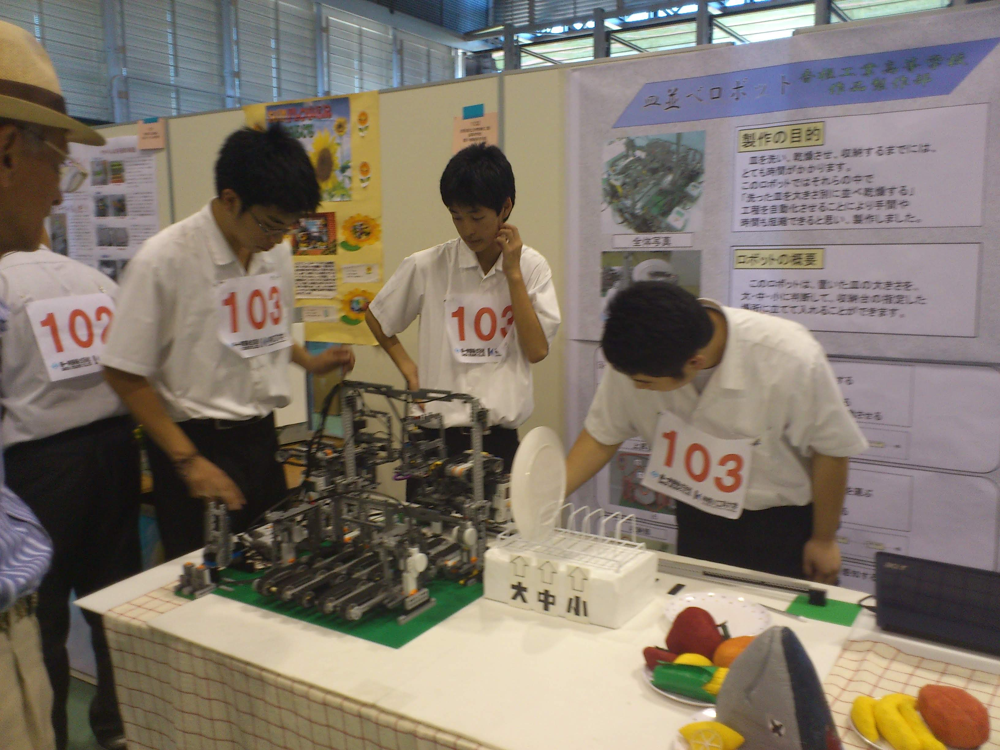
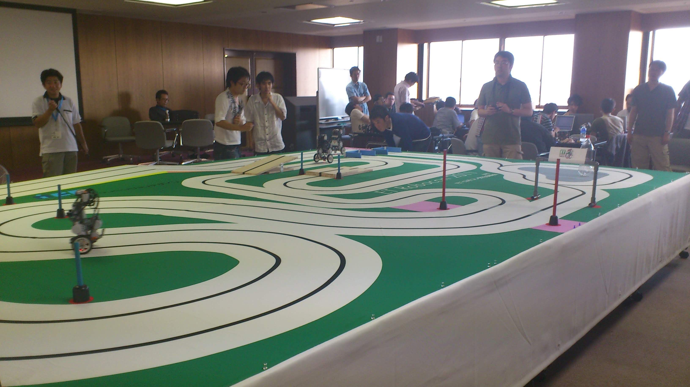
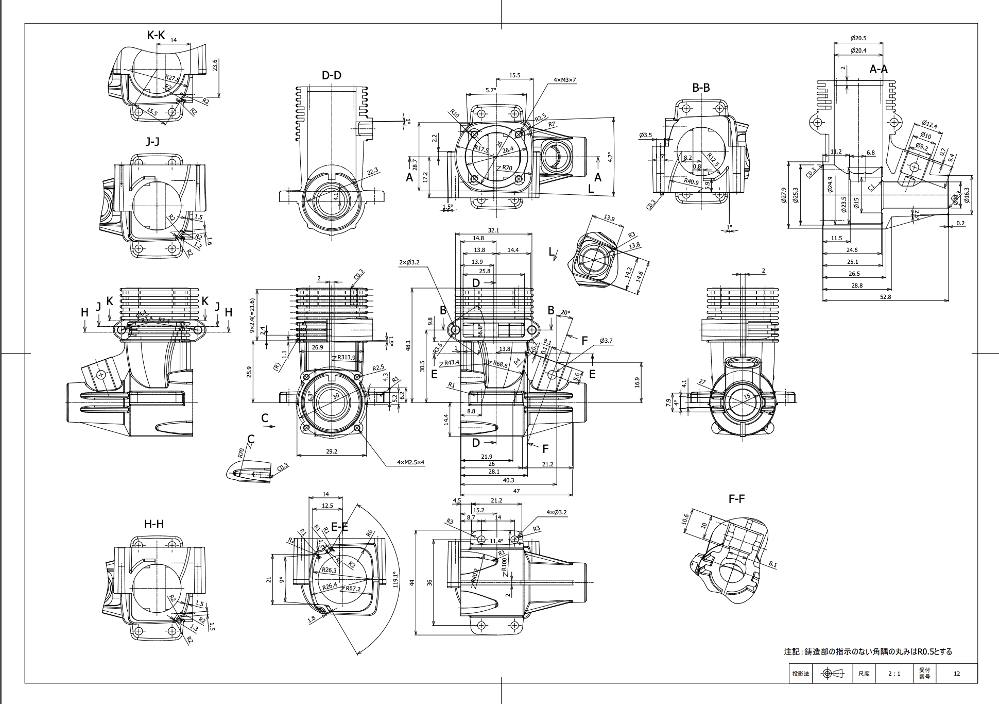
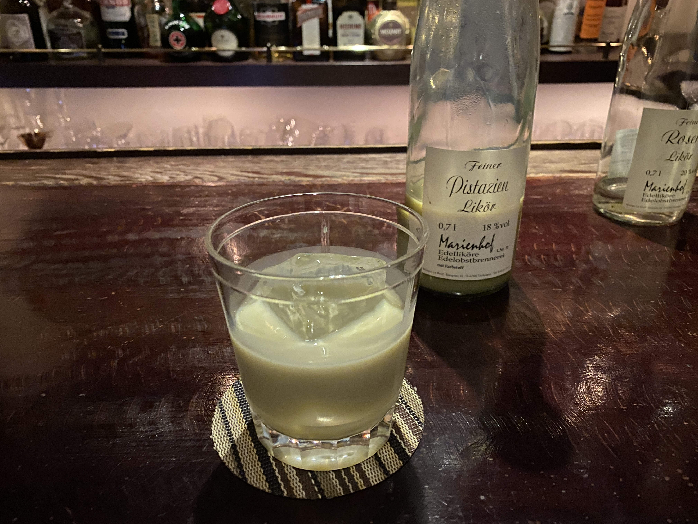
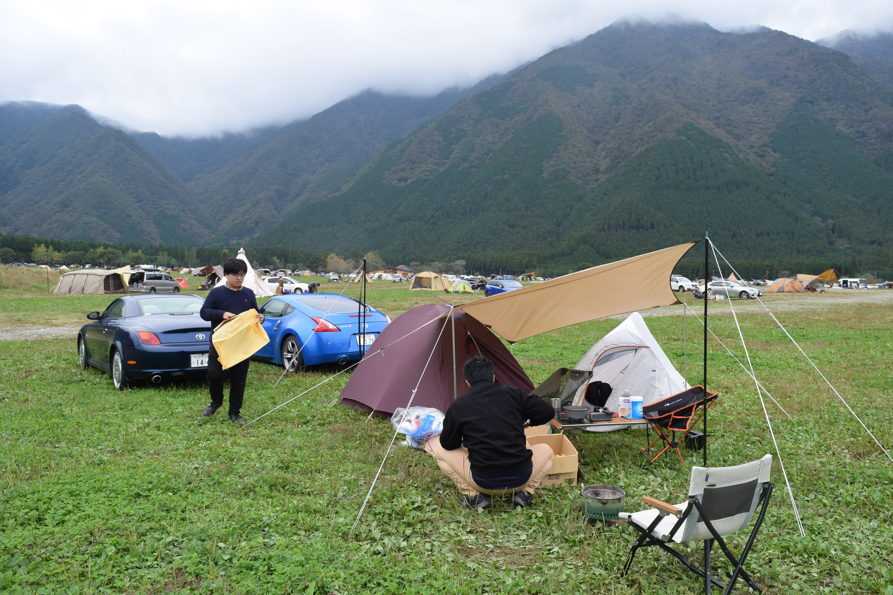

Taku Matsunaga's
Portfolio Site
キャリア①
福岡県立香椎工業高校卒業。
在校時は作品製作部という部活動に所属。
【実績】
・WRO国際大会出場（日本代表選手）
（教育用LEGO製ロボットを使用した競技）
・ETロボコン出場
（組み込みロボットの競技、C++を使用して挫折）


キャリア②
日産自動車株式会社に入社。
技能五輪選手として神奈川県/会社代表として3年間従事。
その後実験やエクステリアデザインの車両設計などに取り組む。

趣味
・音楽鑑賞
（Jazz,Drum and Bass,Rock,Metal）
・ドライブ
（今年愛車を手放したのでしばらく我慢）
・BAR
（お酒は弱いですが、基本ラム酒を飲みます）
・登山とかキャンプとかアウトドアなこと
（気が向いた時に行ってました）


これまでに少し勉強したこと
-
HTML
-
CSS
-
Sass
-
JavaScript
-
PHP
-
Adobe PhotoShop
-
Adobe Illustrator
-
Adobe XD
-
WordPress